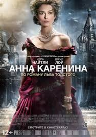
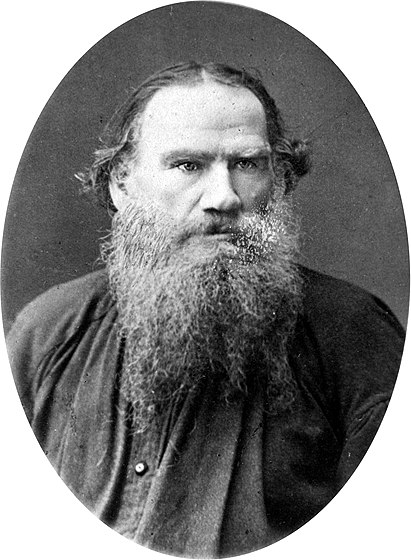

Моя улюблена книга
Мельник Ніна Володимирівна
Назва книги: Анна Кареніна
Автор: Лев Миколайович Толстой
Жанр: соціально-психологічний роман
Рік першого видання: 1955
Короткий опис
«А́нна Каре́ніна» — другий роман Льва Толстого про трагічну любов заміжньої дами Анни Кареніної і офіцера Вронського на тлі щасливого сімейного життя дворян Костянтина Левіна і Кіті Щербацької. Маштабна картина вдач і побуту дворянського середовища Петербурга і Москви другої половини XIX століття, що поєднує філософські роздуми автора з передовими в російській літературі психологічними замальовками, а також сценами з життя селян.
Про автора
(28 серпня (9 вересня) 1828-7 (20) листопада 1910)
Основний конфлікт роману розвивається на прикладі кількох сімейних пар: Анна − Каренін, Долі − Облонський, Кіті − Левін. У всіх випадках автор так і не знаходить відповіді на хвилюючі його питання: як живе людина в сім'ї і в суспільстві? Чи можна обмежитися тільки рамками сім'ї? У чому секрет людського щастя? Головна героїня роману, Анна Кареніна — людина розумна та чесна, але її образ гулящої жінки пов'язанний обманом і зрадою. Сенс її життя — власне щастя. Обранцем Анни стає Олексій Вронський — представник петербурзької інтелігенції. Чоловік Анни, високопоставлений чиновник, який на перший погляд видається бездушним і черствим, але насправді здатний до високих почуттів. Три сюжетні лінії, які складають канву роману мають схожі та відмінні риси. Анна обирає кохання, руйнуючи родину. Долі, дружина її брата Степана Облонського, чинить навпаки: заради щастя і благополуччя дітей пробачає зраду чоловіку. Костянтин Левін, одружившись з молодшою сестрою Долі, Кіті Щербацькою, прагне духовного й чистого шлюбу. Історія одруження Костянтина і Кіті, духовні пошуки Левіна є автобіографічними, оскільки відтворюють епізоди одруження і сімейного життя Льва Миколайовича й Софії Андріївни. Лев Толстой створює умови, які реабілітують Анну. Вона відкрита, не приховує своїх стосунків з Вронським, прагне добитися розлучення у чоловіка. Проте письменник засуджує її. Розплатою за зраду чоловікові стає самогубство героїні, яке за задумом автора, — вияв Божого суду. Недаремно епіграфом до романа є цитата з біблійної книги «Повторення закону» в церковнослов'янському перекладі: «Мнѣ отмщеніе, и Азъ воздамъ». Кохання Анни до Вронського, на думку Льва Толстого, — є виявом не високого почуття, а згубної пристрасті. Її символ — люта завірюха, під час якої відбувається освідчення Вронського Анні. Усіх героїв Толстой вводить без попереднього опису і характеристик, в гострих життєвих ситуацій. Анну — в момент її зустрічі з Вронським, Стіву Облонського і Доллі в ситуації, коли обом здається, що їхня сім'я руйнується, Костянтина Левіна — в той день, коли він намагається зробити пропозицію Кіті.
"Всі щасливі сім'ї схожі одна на одну, кожна нещаслива сім'я нещаслива по-своєму". Усе пішло шкереберть у сім'ї Облонських відтоді, як Доллі, дружина Степана Аркадійовича Облонського, дізналася про зв'язок її чоловіка з француженкою-гувернанткою й сказала, що не може жити з невірним чоловіком в одному домі. Усі, від членів сім'ї до слуг, напружено чекали, що буде далі. Того дня Степан Аркадійович, якого у товаристві звали Стіва, прокинувся на дивані у своєму кабінеті й одразу пригадав, що було три дні тому, і застогнав. Не те щоб він переймався через свій учинок, але він щиро жалкував про те, що не зумів як слід приховати свою інтрижку від дружини і тепер усі страждають: він, вона, діти. Він розумів, що треба якось зарадити лихові, піти до дружини, перепросити її, але він відчув, що зараз йому це не під силу. Він пригадав, як безглуздо повівся, коли дружина, показавши йому записку до француженки, спитала, що це означає. А він нічого не заперечував і тільки безглуздо посміхався своєю звичною доброю посмішкою, наче це його не стосувалося. Він бачив, як Доллі здригнулася від болю й більше не схотіла його бачити. Степан Аркадійович подзвонив, щоб йому несли одягатися, і разом з одягом камердинер Матвій приніс телеграму від сестри Анни, яка сповіщала про свій приїзд. Стіва зрадів, адже Анна могла посприяти примиренню подружжя. Отож він, поголившись і одягнувшись, пішов снідати. Поснідавши і почитавши газету, випивши другу чашку кави з калачем, він посміхнувся не від того, що радів з доброї звістки, а просто від доброго травлення. Та, згадавши про дружину, враз посмутнів: треба було йти до неї, але він відчував, що все, що б він не сказав, буде виглядати фальшивим, а фальшу він сам не терпів. Однак відчинив двері до спальні дружини. Дар'я Олександрівна (близькі звали її Доллі) намагалася виглядати суворо, проте відчувала, що боїться чоловіка, боїться брехні і боїться цієї розмови. Вона складала дитячі речі, збираючись піти від нього і водночас розуміла, що не зможе цього зробити, адже так звикла вважати його своїм чоловіком, любити його. Коли Стіва побачив її змучене стражданням обличчя, його спокій і добродушність відразу десь ділися, на очі навернулася сльоза, бо він щиро жалів її і просив пробачити йому. Але вона й чути його не хотіла. Дивіться також Анна Кареніна (повний текст) ▲ читається за 8 вечорів. Бажаємо вам гарного настрою і здоров'я! Анна Кареніна (стислий переказ) ▲ читається за 26 хвилин Анна Кареніна (стисло) ▲ читається за 22 хвилини "Анна Кареніна" (шкільні твори) "Анна Кареніна" (реферати) Назвіть особливості художнього стилю Толстого (та інші запитання) Біографія Льва Толстого Степан Аркадійович поїхав на службу. Ось уже третій рік він керував установою, його любили й поважали як підлеглі, так і начальники. Він був ліберальним, поблажливо ставився до людей, усвідомлюючи й свою здатність робити помилки. Проте до служби він був байдужим, а тому саме там помилок не робив, за що його й цінувало керівництво. Кілька годин він займався справами служби, коли до нього прийшов товариш молодості, якого він дуже любив, — Костянтин Дмитрович Левін. Вони були цілковитою протилежністю один одному, хоч були одного віку й дружили з юності. Кожен з них вважав, що інший живе примарним життям. Левін жив у селі і щось робив, але Стіва не розумів, що саме, і не цікавився тим. Коли Облонський спитав про мету приїзду Левіна до Москви, той почервонів, не відповівши на питання, натомість поцікавився, як справи у князів Щербацьких. Свого часу, ще студентом Левін часто бував у цій родині і дружив з молодим князем Щербацьким. Він закохався в усю родину, а тому довго не міг зрозуміти, котра з дочок князів Щербацьких йому наймиліша. Тепер же він точно знав, що це Кіті, наймолодша князівна, яку він вважав найдовершенішою, і тепер приїхав з твердим наміром посвататися до неї. Колись вони бачилися чи не щодня, та раптом Левін поїхав у село. І все ж почуття до Кіті не давали йому спокою, отож для себе він усе вирішив остаточно. Щоправда, його вважали вдалою партією для Кіті, але його несподіваний від'їзд був таким недоречним. Зупинившись у старшого брата по матері Кознишева, він хотів розповісти братові про свої почуття, однак той якраз розмовляв з відомим професором філософії, і Левін змушений був чекати й слухати. Невдовзі розмова зацікавила його, так що він навіть спитав: "Якщо почуття мої знищені, якщо тіло моє помре, то ніякого існування не може бути?" Той відповів, що наука не має фактів, аби стверджувати щось напевно, отож Левін його більше й не слухав. Коли нарешті гість пішов, Кознишев почав розпитувати про справи у земстві, у роботі якого Левін якийсь час брав участь, а потім, розчарувавшись, покинув цю справу. Потім він розповів Левіну про те, що рідний брат Костянтина Дмитровича — Миколай, який розтратив більшу частину своєї маєтності й посварився з братами, тепер потрапив у погане товариство. Кознишев заплатив був за векселем Миколая, але той замість вдячності вимагав покинути його, залишити у спокої. Левін зрозумів, що братові недобре й хотів був їхати до нього, але спочатку він мав зустрітися з Облонським, а потім з Кіті. Адже заради неї він і приїхав. Левін побачив, що Кіті катається на ковзанах. Вона зраділа йому й запросила кататися разом. Мати її досить холодно привітала його, але запросила відвідати їх. Зрадівши, Левін пообіцяв бути ввечері й поїхав обідати з Облонським. Стіва Облонський був уже багато винен у ресторані "Англія", але волів обідати саме тут, бо вважав соромом уникати ресторану за таких умов. Вони смакували вишукані страви, хоча Левін краще б з'їв білого хліба з сиром. Облонський сказав, що Кіті цікавилась Левіним, а Доллі вважає, що він буде добрим чоловіком для її сестри Кіті. Левін був у захваті й не міг пережити, щоб хтось говорив про його почуття, — таким священним воно для нього було. Проте Облонський попередив, що після від'їзду Левіна до Щербацьких вчащав молодий граф Олексій Вронський, отож йому слід поспішати освідчитися першим. Левін пошкодував, що все розповів Облонському, бо той не зрозумів його "особливого" почуття і принизив, спростив його кохання. Князівні Кіті було вісімнадцять років, і вона виїжджала лише першу зиму, але вже мала неабиякий успіх: усі молоді люди були просто закохані у неї. Батьки ж розуміли, що серйозної пропозиції слід чекати саме від Левіна та Вронського. Княгиня Щербацька не розуміла Левіна, він їй не подобався, і вона зраділа, коли він тоді несподівано поїхав. Натомість Вронський задовольняв усі вимоги матері Кіті: багатий, розумний, шляхетний, з блискучими перспективами щодо кар'єри. Князь Щербацький Вронському не довіряв і вважав, що кращого чоловіка для Кіті, ніж Левін, годі й бажати. Сама Кіті дружньо ставилася до Левіна й не дуже уявляла собі майбутнє з ним, тоді як майбутнє з Вронським їй здавалося прекрасним, хоч вона й не могла визначити, що відчувала до нього. Увечері того дня Левін приїхав до Щербацьких заздалегідь, аби освідчитися Кіті. Вона була збентежена його зізнанням і, слухаючи його слова, почувалася щасливою, однак, згадавши про Вронського, відмовила Левіну. Той вклонився і вже хотів піти, коли вийшла княгиня. Вона все прочитала по обличчях молодих людей і зраділа вибору дочки. Незабаром приїхала подруга Кіті графиня Нордстон, яка завжди висміювала його, бо не розуміла. Левіну зазвичай удавалося гідно відповідати на її дошкульні слова, та цього вечора він хотів тільки одного: якнайшвидше піти звідси. Але його затримав прихід нового гостя — графа Олексія Вронського. Левін був із тих людей, які в щасливому супернику здатні бачити не погане, а краще. Отож він відзначив вроду й шляхетність Вронського, визнавши переваги суперника. Коли вечір скінчився, Кіті розповіла матері про розмову з Левіним. Мати була задоволена й сказала чоловікові, що все йде до шлюбу Кіті з Вронським. Той розгнівався й почав кричати, що молодий граф не вартий їхньої дочки. Княгиня так і не наважилася тоді сказати чоловікові про відмову Левіну. Сама ж Кіті, хоч і почувалася зворушеною увагою Вронського, не могла бути щасливою, бо почувалася винною перед Левіним. Вронський і не здогадувався, які плани мала княгиня Щербацька щодо нього, бо сімейного життя він не любив і не збирався одружуватися, хоч Кіті й подобалася йому. Проте жодного кроку назустріч він ще не зробив, хоч і відчував якийсь духовний зв'язок із Кіті. Князівні Кіті було вісімнадцять років, і вона виїжджала лише першу зиму, але вже мала неабиякий успіх: усі молоді люди були просто закохані у неї. Батьки ж розуміли, що серйозної пропозиції слід чекати саме від Левіна та Вронського. Княгиня Щербацька не розуміла Левіна, він їй не подобався, і вона зраділа, коли він тоді несподівано поїхав. Натомість Вронський задовольняв усі вимоги матері Кіті: багатий, розумний, шляхетний, з блискучими перспективами щодо кар'єри. Князь Щербацький Вронському не довіряв і вважав, що кращого чоловіка для Кіті, ніж Левін, годі й бажати. Сама Кіті дружньо ставилася до Левіна й не дуже уявляла собі майбутнє з ним, тоді як майбутнє з Вронським їй здавалося прекрасним, хоч вона й не могла визначити, що відчувала до нього. Увечері того дня Левін приїхав до Щербацьких заздалегідь, аби освідчитися Кіті. Вона була збентежена його зізнанням і, слухаючи його слова, почувалася щасливою, однак, згадавши про Вронського, відмовила Левіну. Той вклонився і вже хотів піти, коли вийшла княгиня. Вона все прочитала по обличчях молодих людей і зраділа вибору дочки. Незабаром приїхала подруга Кіті графиня Нордстон, яка завжди висміювала його, бо не розуміла. Левіну зазвичай удавалося гідно відповідати на її дошкульні слова, та цього вечора він хотів тільки одного: якнайшвидше піти звідси. Але його затримав прихід нового гостя — графа Олексія Вронського. Левін був із тих людей, які в щасливому супернику здатні бачити не погане, а краще. Отож він відзначив вроду й шляхетність Вронського, визнавши переваги суперника. Коли вечір скінчився, Кіті розповіла матері про розмову з Левіним. Мати була задоволена й сказала чоловікові, що все йде до шлюбу Кіті з Вронським. Той розгнівався й почав кричати, що молодий граф не вартий їхньої дочки. Княгиня так і не наважилася тоді сказати чоловікові про відмову Левіну. Сама ж Кіті, хоч і почувалася зворушеною увагою Вронського, не могла бути щасливою, бо почувалася винною перед Левіним. Вронський і не здогадувався, які плани мала княгиня Щербацька щодо нього, бо сімейного життя він не любив і не збирався одружуватися, хоч Кіті й подобалася йому. Проте жодного кроку назустріч він ще не зробив, хоч і відчував якийсь духовний зв'язок із Кіті.
Наступного дня Вронський поїхав на вокзал зустрічати свою матір, що повернулася з Петербурга. На пероні він зустрів Облонського, який чекав на сестру Анну, що мала приїхати з Петербурга цим потягом. У розмові вони торкнулися Кареніних, з якими Вронський не був знайомий, хоч і чув про них, а також Левіна. Стіва сказав, що Левін мав освідчитися Кіті, і Вронський одразу зрозумів, чому вона відмовила його супернику. І хоч сам він не має наміру одружуватися з Кіті, його самолюбство потішене, а докорів сумління щодо Кіті він не відчуває. Прибув потяг, і Вронський, підійшовши до потрібного відділення, чемно відсторонився, пропускаючи молоду жінку, яка саме виходила звідти. Її гарне вродливе обличчя, грація, витонченість, особлива ласкава усмішка і уважний погляд сірих очей примусили Вронського подивитися на неї уважніше. Жінка теж повернула голову до нього, і він устиг помітити в її короткому погляді природну жвавість, ніби вона стримувала щось, чого було в надлишку в її погляді, посмішці. Розмовляючи з матір'ю, Вронський прислухається до голосу молодої жінки, яка просить подивитися, чи приїхав її брат, і розуміє, що це і є сестра Стіви Облонського. Вона повертається до купе, і мати Вронського представляє його своїй супутниці. Та, сміючись, говорить, що впізнала його, адже всю дорогу вони розповідали одна одній про своїх синів — графиня про Олексія, а Анна про семирічного Серьожу. Вронського вразила рішучість жінки, коли вона, зустрівшись з братом, обняла його й поцілувала. Коли вони виходили, стався прикрий випадок — поїзд задавив сторожа. Стіва й Вронський довідалися, що в нього залишилася велика сім'я, і Анна говорить, що треба щось зробити для них. Вронський відійшов, але їх наздогнав начальник станції й спитав, кому призначені двісті рублів, які дав Вронський. Анна виходить з вокзалу пригніченою. Вона спитала в брата, чи давно він знає Вронського, і той розповів, що давно й що всі сподіваються на шлюб його з Кіті. Доллі не чекала ні від кого допомоги, проте, пам'ятаючи дружнє ставлення зовиці до неї, змушена була прийняти Анну. Анна щиро раділа можливості побачити племінників, про яких вона добре знала — і коли хто народився, і на що хворів.Доллі приємно вражена. Коли вони залишаються наодинці, Анна говорить їй те, Юро що та сама вже не раз думала: якщо любиш чоловіка, маєш простити заради дітей і себе. Після цієї розмови Доллі відчула полегшення, і коли вони обідали вдома, вперше за час розладу говорила чоловікові "ти". І хоч певна відчуженість залишалася, про розлучення вже не йшлося. Після обіду приїхала Кіті, яка спочатку почувалася ніяково в присутності "поважної петербурзької дами", але потім сердечність і щирість Анни її підкорила, і вони дружньо говорили про Вронського, про майбутній бал. Діти не відходили віл Анни. Усі говорили про щось хороше, і Анна розповіла Кіті, що їхала до Москви разом з матір'ю Вронського. Не розповіла лише про двісті рублів, які той дав удові, бо відчула, що тут є дещо таке, що стосується лише її, але чого не повинно бути. Того дня трапилася ще одна подія. Коли увечері всі зібралися після чаю у вітальні, де тепер панувала атмосфера спокою й любові, адже Облонські помирилися, Анні раптом стало сумно, їй бракувало сина. Вона пішла до себе в кімнату по фотокартки сина і, коли була на сходах, побачила, як увійшов гість. То був Вронський. Його обличчя здалося Анні присоромленим і переляканим, коли він побачив її. Облонський запросив його увійти, але той відмовився й пішов. Усім цей візит видався дивним. Кіті подумала, що Вронський хотів бачити її, але не наважився увійти. Анна ж серцем відчула щось недобре. Коли Щербацькі приїхали на бал, про який Кіті говорила з Анною, він уже розпочався. Кіті була в чудовому настрої, вона була свідома своєї вроди й справді виглядала прекрасно й невимушено, наче народилася в цій залі. Її одразу запросив до танцю найкращий танцюрист, і вона, вже танцюючи, побачила Облонських та Анну, що була у вишуканому чорному оксамитовому платті з білим мереживом. Кіті просила її бути в ліловому, проте змушена була визнати, що Анна мала рацію, не намагаючись прикрасити себе за допомогою сукні. Вона була для неї ніби рамою, але головною була сама Анна — проста, невимушена і водночас жива, цікава й гарна. Вона схвально оглянула Кіті й весело зауважила, що та не залишається без партнерів, навіть у залу входить танцюючи. Саме тоді підійшов Вронський і вклонився. Кіті здалося, що Анна невдоволена ним, але не зрозуміла чому. Вронський нагадав Кіті, що першу кадриль вона обіцяла йому. Вона дивилася, як танцює Анна, й милувалася нею, чекаючи, щоб Вронський запросив її на вальс. Помітивши здивований погляд дівчини, Вронський, почервонівши, запросив-таки її на вальс. Вони зробили лише крок, як музика увірвалася. Кіті подивилася на Вронського з такою любов'ю, що не можна було не помітити, але той погляд так і залишився без відповіді, і це гнітило її ще дуже довго. Коли вона танцювала з Вронським кадриль, то сподівалася, що все вирішиться вже під час мазурки, хоч той її ще не запросив на цей танець. Кіті була певна, що інакше й бути не може. Але тут вона побачила Анну. Як змінилася ця стримана жінка! Очі її сяяли, вона відчувала те саме, що й Кіті, — вона мала успіх. Раптом Кіті, подивившись на Вронського, зрозуміла з жахом, що саме він був тому причиною. Завжди спокійне й незворушне обличчя графа мінялося на покірне, коли він дивився на Анну, якої, здавалося, побоювався. Кіті відмовила всім, хто запрошував її на мазурку, певна того, що Вронський танцюватиме з нею. Але на мазурку він запросив Анну, а Кіті змушена була сидіти серед тих, кого не запросили. Графиня Нордстон, побачивши це, звеліла своєму кавалеру запросити Кіті. Кіті була у розпачі, вона не змогла приховати це, і Вронський, поглянувши на неї під час мазурки, не впізнав її, так змінило обличчя дівчини страждання її душі.Коли Левін вийшов від Щербацьких після невдалого освідчення, на душі в нього було гірко, він картав себе за те, що пішов обідати, а потім свататися, а тим часом його братові Миколаю потрібна була його допомога. Він поїхав до брата, згадуючи дорогою його історію. У студентські роки Миколай жив, немов чернець, уникав усіляких розваг, постився, молився, аж раптом все змінилося тяжким відчайдушним загулом. Він зійшовся з такими огидними людьми, що згодом усі відвернулися від нього. Левіну було жаль брата, якого він вважав винним хіба що в тому, що той мав пристрасний запальний характер і пригнічений розум. Костянтин Дмитрович думав про те, як дивно реагують люди: коли він намагався стримати свій характер за допомогою релігії, всі сміялися з нього, а коли дав волю цьому характеру, всі від нього відсахнулися. Він вирішив довести братові, що любить його й розуміє. Левін знайшов брата у якомусь номері, де сиділи незнайомі люди. Миколай одразу послав рябувату жінку по горілку. Левін з болем відзначив, як змінився на гірше брат. Миколай спочатку зрадів, а потім, пригадавши свої образи на старшого брата Сергія Івановича, якось перемінився, набундючився. Проте Левін не звернув на це уваги. Брат розмовляв з якимсь молодиком про влаштування слюсарень у селі, і Костянтин Дмитрович спитав, навіщо ж у селі, де й так роботи багато. Брат зауважив, що той ставиться до селян та їхньої долі по-панськи. Левін не сперечався, жаліючи брата. Повернулася жінка з горілкою. Її звали Маша. Миколай узяв її з повій і жив з нею як із дружиною. Вона його доглядала й спиняла, коли він пив надто багато. Цього разу Миколай схопив пляшку й випив з жадобою, швидко сп'янівши, а потім його вклали спати. Левін просив, щоб Маша сповіщала його про брата у листах і потроху умовляла його переїхати жити у його дім.